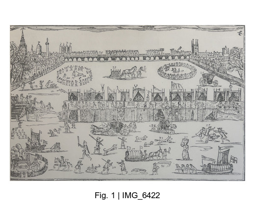
Fair on the Thames, 1683
Historical engraving of a fair on the frozen Thames, with booths, crowds and activities on the river.
Fair on the Thames, 1683.
IMG_6422 · Figure 1
49 illustrations · 43 source scans · 3 documented background repairs. Click a picture for the full-resolution PNG. JSON catalog

Historical engraving of a fair on the frozen Thames, with booths, crowds and activities on the river.
Fair on the Thames, 1683.
IMG_6422 · Figure 1
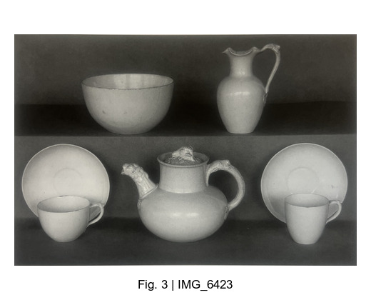
Photograph of a bone-china tea service with teapot, cups, saucers, bowl and jug.
Felix Summerly’s Tea Service, designed by Henry Cole and manufactured by Minton & Co., bone china, 1846. Victoria and Albert Museum, London.
IMG_6423 · Figure 3
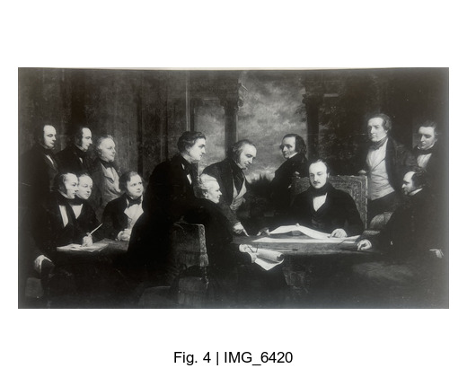
Group portrait of the commissioners gathered around plans for the Great Exhibition.
Henry Windham Phillips, The Royal Commissioners for the Great Exhibition of 1851. Victoria and Albert Museum, London.
IMG_6420 · Figure 4
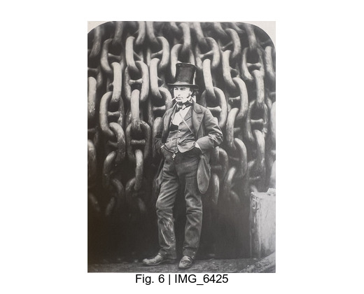
Portrait of Brunel standing before large ship chains. The original print has rounded upper corners.
Robert Howlett, Isambard Kingdom Brunel (1857). National Portrait Gallery, London.
IMG_6425 · Figure 6
Original rounded print corners are retained within a rectangular canvas. A narrow strip at the left edge is cropped inward to exclude torn paper/tabletop; the portrait subject is retained.
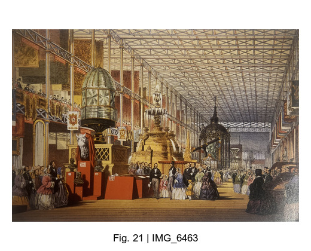
Colour view along the nave, with visitors, elaborate exhibits, galleries and the iron-and-glass roof.
The western (British) nave of the Crystal Palace.
IMG_6463 · Figure 21
Photographic glare remains in the lower-right area; historical detail has not been synthesized.
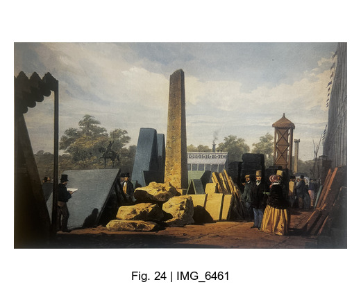
Colour exterior display of stone slabs, mineral blocks and columns beside the Palace.
Raw materials outside the west entrance to the Crystal Palace.
IMG_6461 · Figure 24
The far right edge meets the source photograph boundary.
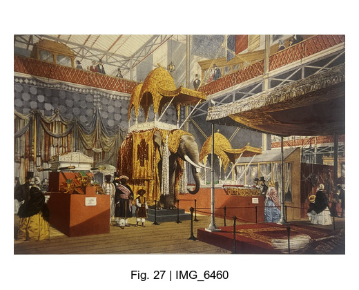
Colour exhibition interior with a decorated elephant, suspended howdahs, textiles and visitors.
John Nash, stuffed elephant and howdah from India.
IMG_6460 · Figure 27
IMG_6459 contains a second, cropped photograph of this illustration. The complete view from IMG_6460 is used.
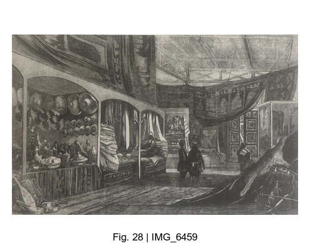
Engraved exhibition court displaying textiles, vessels and decorative objects beneath draperies.
The ‘Tunis Court’.
IMG_6459 · Figure 28
The same page is also photographed in IMG_6460, where this illustration is incomplete. IMG_6459 supplies the complete view.
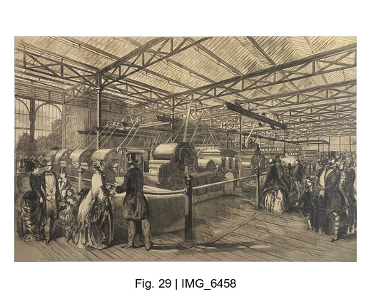
Visitors observe cotton machinery behind a protective rail under the Palace roof.
Hibbert, Platt and Son’s cotton machines. Illustrated London News (23 August 1851).
IMG_6458 · Figure 29
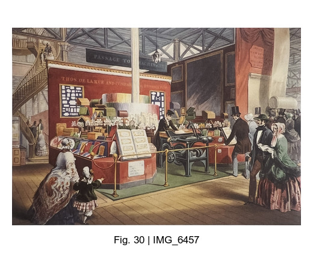
Visitors watch an attendant demonstrate envelope-making machinery at a colourful stationery stand.
Attendant demonstrating de la Rue’s envelope machine.
IMG_6457 · Figure 30
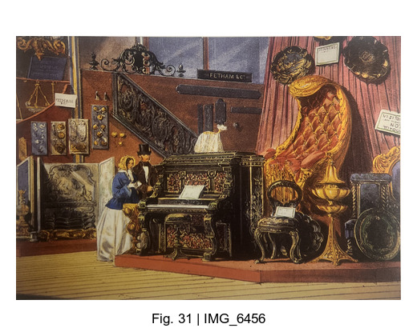
Colour exhibition view of ornate furnishings, cabinets, chairs, trays and visitors.
Goods for the home.
IMG_6456 · Figure 31
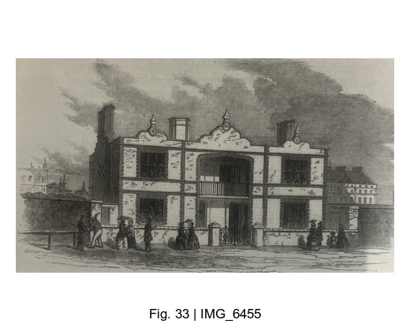
Engraved exterior of model housing; adjacent text credits Henry Roberts and describes homes for four families.
Prince Albert’s model working-class home. Illustrated London News (14 June 1851).
IMG_6455 · Figure 33
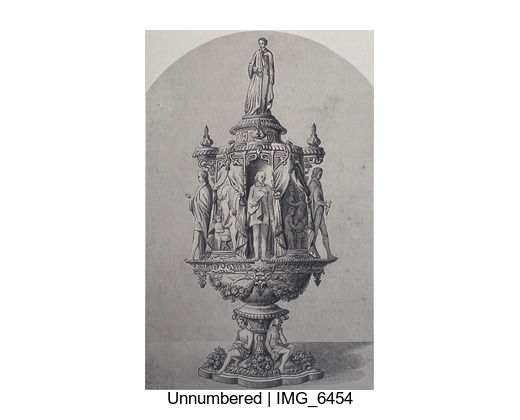
Sculptural ornamental vase with historical figures and a figure at the top; adjacent text names Nelson, Wellington, Milton, Shakespeare, Newton and Watt.
[Beginning clipped] by Watherston and Brogden.
IMG_6454 · Figure number not visible
Figure number and beginning of caption lie outside the photograph; no figure number is assigned. The original illustration has an arched top; blank paper is retained within the rectangle.
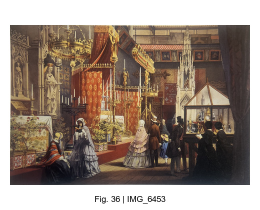
Colour view of visitors in Pugin’s court among richly decorated Gothic furniture and ecclesiastical objects.
Pugin’s Medieval Court in the Gothic Revival style.
IMG_6453 · Figure 36
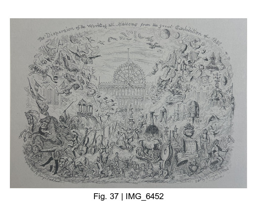
Fantastical crowded satire showing exhibition objects dispersing around the Crystal Palace.
George Cruikshank, ‘The Dispersion of the Works of All Nations from the Great Exhibition of 1851’.
IMG_6452 · Figure 37
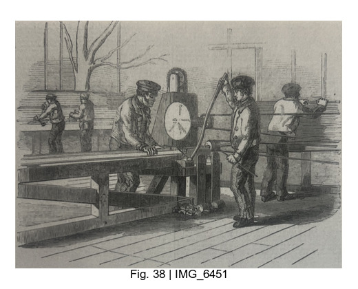
Engraving of workers operating woodworking machinery during construction.
Workers building the Crystal Palace. Illustrated London News (7 December 1850).
IMG_6451 · Figure 38
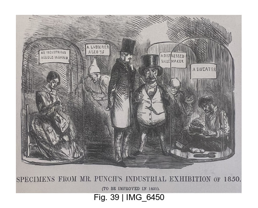
Cartoon displaying impoverished workers in glass cases; internal title reads Specimens from Mr. Punch’s Industrial Exhibition of 1850 (To be improved in 1851).
[Beginning clipped] workers on display. [Publication name clipped] (13 April 1851).
IMG_6450 · Figure 39
The book caption is partly outside the photograph. Visible wording and date are transcribed; missing text is not supplied as fact.
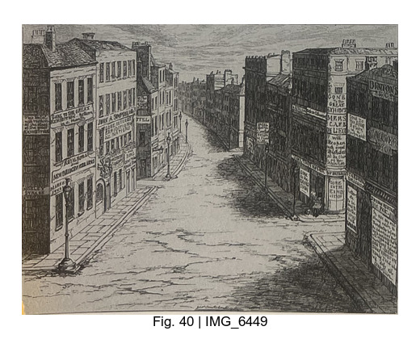
Satirical view of deserted Manchester streets as residents travel to the exhibition.
George Cruikshank, ‘Manchester in 1851’.
IMG_6449 · Figure 40
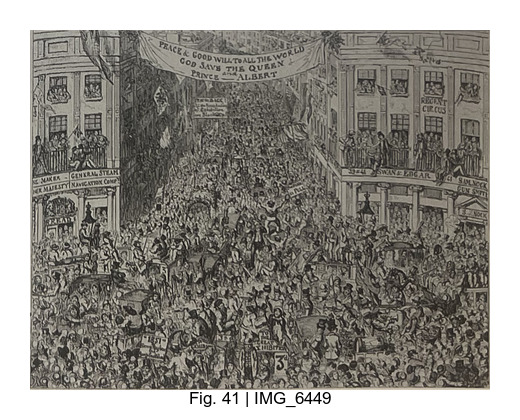
Crowded London street filled with exhibition visitors, paired with the deserted Manchester scene.
George Cruikshank, ‘London in 1851’.
IMG_6449 · Figure 41
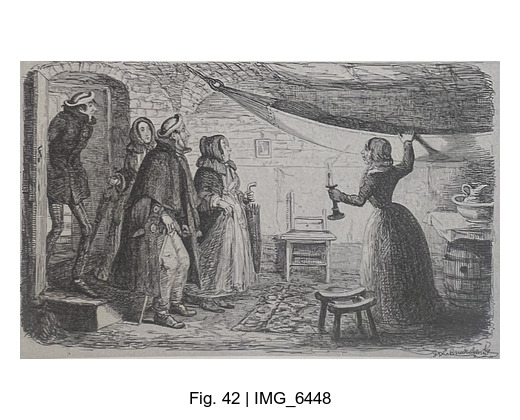
A family is shown a cramped cellar lodging containing a bed and hammock; the page links the scene to Henry Mayhew’s Mr. and Mrs. Sandboys.
George Cruikshank, ‘Looking for lodgings’.
IMG_6448 · Figure 42
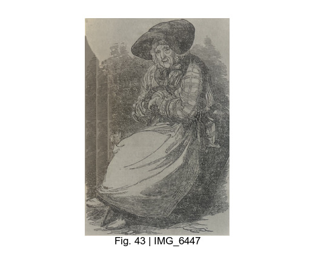
Engraved seated portrait of Mary Callinack in a bonnet and dress.
Mary Callinack from Penzance. Illustrated London News (25 October 1851).
IMG_6447 · Figure 43
A torn left edge removes background and reaches the outline of the dress. Missing subject detail cannot be authenticated. Background-only repair is separately documented. The repaired left background is approximate; the join may remain visible at high magnification. Review the unrepaired comparison for scholarly reproduction. Background hatching in the larger tear is approximate; no missing subject details were reconstructed.
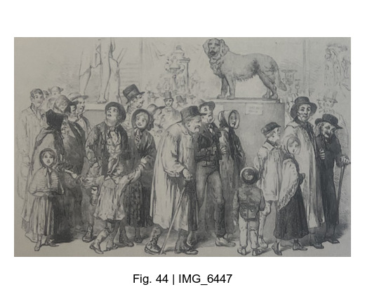
Group of rural visitors standing among sculpture exhibits, including a lion.
Agricultural workers at the Great Exhibition. Illustrated London News (19 July 1851).
IMG_6447 · Figure 44
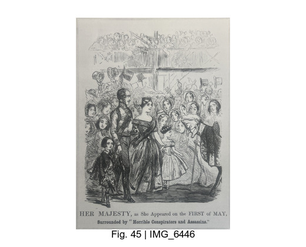
Cartoon depicting Victoria and Albert among a friendly crowd, with an ironic subtitle about conspirators and assassins.
The Queen and her subjects. Punch (3 May 1851).
IMG_6446 · Figure 45
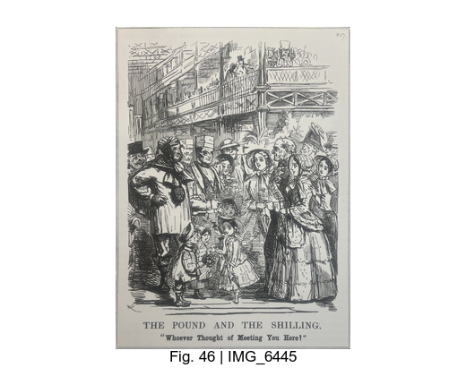
Cartoon of social groups encountering each other in the exhibition; its printed subtitle asks Whoever Thought of Meeting You Here?
The classes and the masses. Punch (14 June 1851).
IMG_6445 · Figure 46
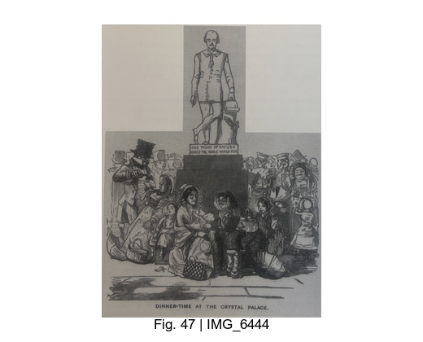
Punch cartoon of families resting and eating around a statue, with the phrase One touch of nature makes the whole world kin.
Flaunting bourgeois norms: working-class mothers nurse their children in the nave. Punch (5 July 1851).
IMG_6444 · Figure 47
Original illustration has a stepped silhouette; surrounding blank paper is retained for a rectangular image.
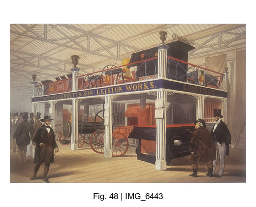
Colour view of Garrett & Son’s Leiston Works machinery stand with male visitors.
Agricultural machinery: exhibits for men.
IMG_6443 · Figure 48
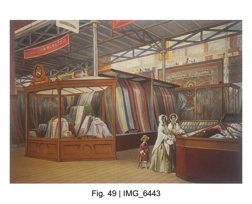
Colour interior of Bradford Court showing striped fabrics, textile cabinets, women and a child.
Bradford Court: exhibits for women.
IMG_6443 · Figure 49
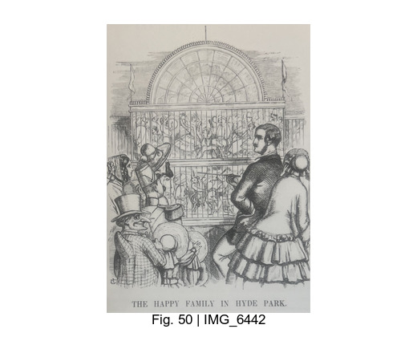
Cartoon showing spectators in front of an ornate enclosure, used to discuss national and international relations.
Nationalism and internationalism at the Great Exhibition: John Tenniel, Punch (19 July 1851).
IMG_6442 · Figure 50
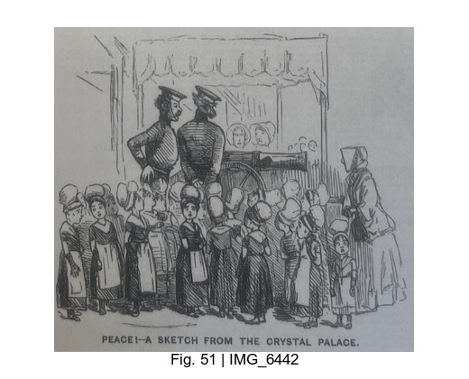
Cartoon contrasting the language of peace with the display of arms and military figures.
Armaments at the Great Peace Festival. Punch (5 July 1851).
IMG_6442 · Figure 51
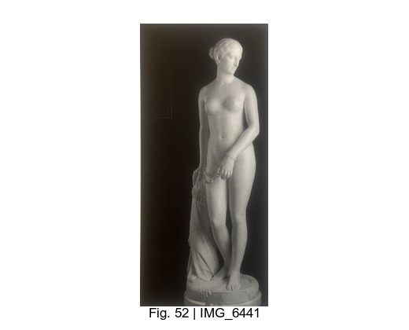
Photograph of the marble sculpture of a standing chained woman.
Hiram Powers, Greek Slave (1843). Corcoran Gallery of Art, Washington.
IMG_6441 · Figure 52
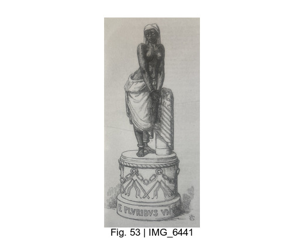
Satirical image of an enslaved woman standing on a pedestal with chains and an American motto.
John Tenniel, ‘Virginian slave’. Punch (7 June 1851).
IMG_6441 · Figure 53
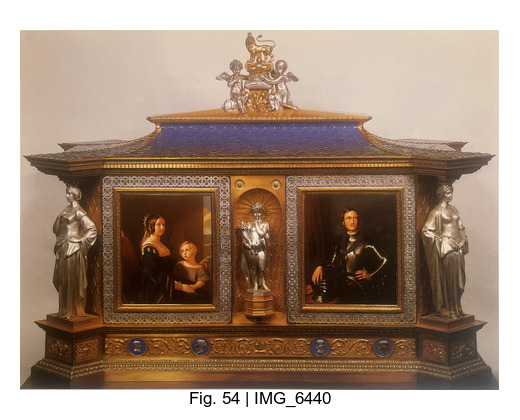
Ornate cabinet with portraits of Victoria and Albert, metal figures, enamel decoration and a lion finial.
Jewel cabinet, by Louis Gruner for Elkington and Company (1851). The Royal Collection.
IMG_6440 · Figure 54
Small torn area in the upper-left background; see repair notes and unrepaired comparison.
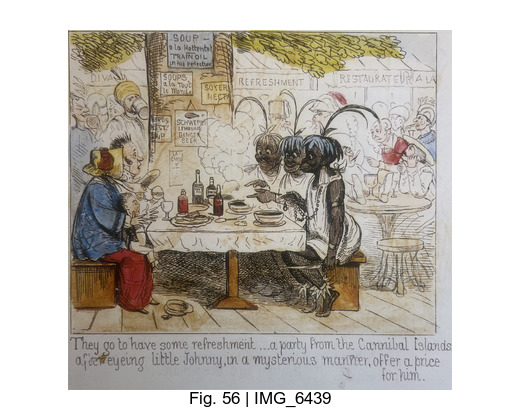
Coloured caricature of a refreshment scene, presented in the book as an example of racialized stereotyping of foreign visitors.
The savage other: ‘Cannibal Islanders’.
IMG_6439 · Figure 56
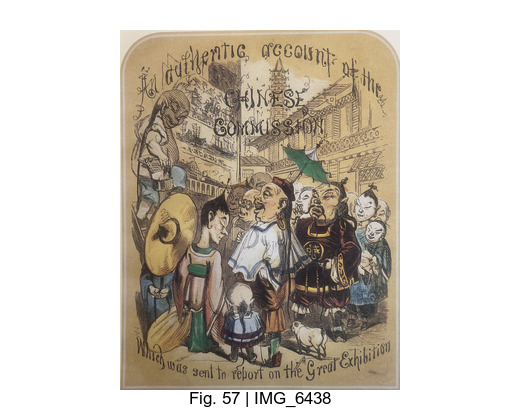
Coloured satirical frontispiece depicting caricatured Chinese figures; the source discusses British prejudice and Orientalism.
Orientalism at the Great Exhibition: frontispiece to Henry Sutherland Edwards, An Authentic Account of the Chinese Commission, which was sent to report on the Great Exhibition.
IMG_6438 · Figure 57
Original rounded top corners are retained.
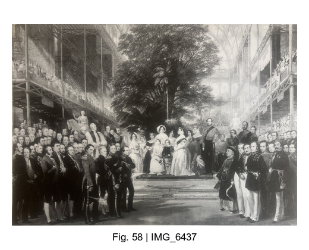
Ceremonial group portrait of Queen Victoria, Prince Albert, officials and spectators inside the Crystal Palace.
H. C. Selous, The Opening of the Great Exhibition (1851–2). Victoria and Albert Museum, London.
IMG_6437 · Figure 58
Right edge is clipped by the source photograph.
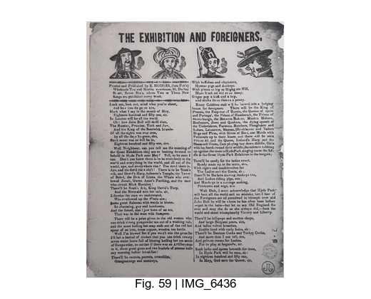
Illustrated song broadside titled The Exhibition and Foreigners, using caricatures and verses about overseas visitors.
Xenophobic broadsheet.
IMG_6436 · Figure 59
Irregular edges belong to the reproduced historical broadside and are retained on a rectangular canvas.
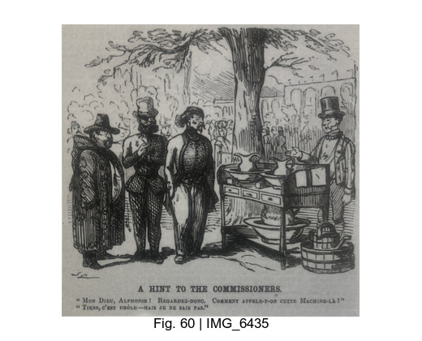
Punch cartoon portraying French visitors puzzled by washing equipment; the surrounding discussion identifies its Francophobic framing.
Francophobia: John Leech, ‘A Hint to the Commissioners’. Punch (26 April 1851).
IMG_6435 · Figure 60
The far right edge meets the source photograph boundary.
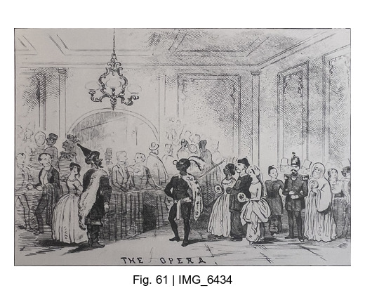
Historical cartoon of visitors in varied forms of dress at an opera reception, reproduced in a discussion of cultural boundaries.
Crossing boundaries: dressing and undressing.
IMG_6434 · Figure 61
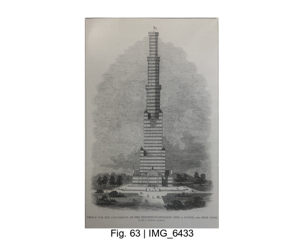
Engraving proposing a tall stepped tower made from the exhibition building; the printed design identifies a height of 1000 feet.
Design for conversion of the exhibition building into a tower.
IMG_6433 · Figure 63
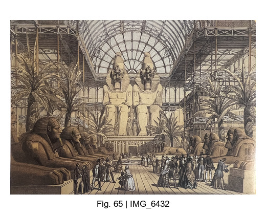
Coloured interior with Egyptian colossi, sphinxes, palms and visitors beneath the glass transept.
The north transept, Sydenham.
IMG_6432 · Figure 65
Right edge of the illustration is clipped by the source photograph; no missing architectural detail was invented.
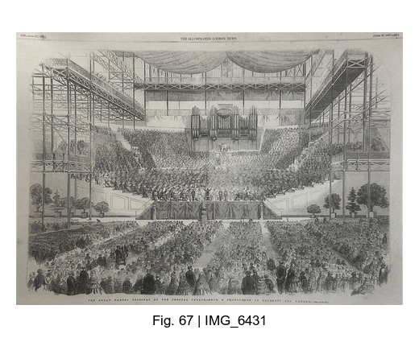
Engraving showing the orchestra, chorus, organ and audience at a Handel festival inside the Crystal Palace.
The Handel Festival of 1857, Sydenham Crystal Palace. Illustrated London News (27 June 1857).
IMG_6431 · Figure 67
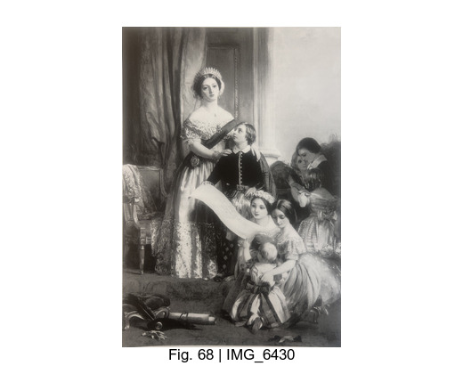
Portrait of Queen Victoria and her children with a map or document and a globe.
John Callcott Horsley, A Portrait Group of Queen Victoria and Her Children (c. 1865). Forbes Magazine Collection, New York.
IMG_6430 · Figure 68
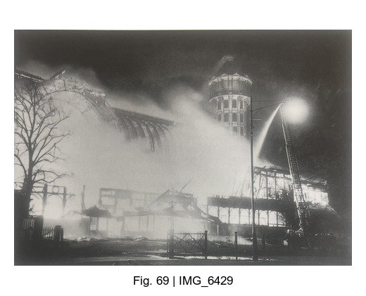
Night photograph of the burning Crystal Palace with firefighting streams and a water tower.
The fire, 20 November 1936.
IMG_6429 · Figure 69
Caption date is transcribed as printed (20 November 1936); it has not been independently verified.
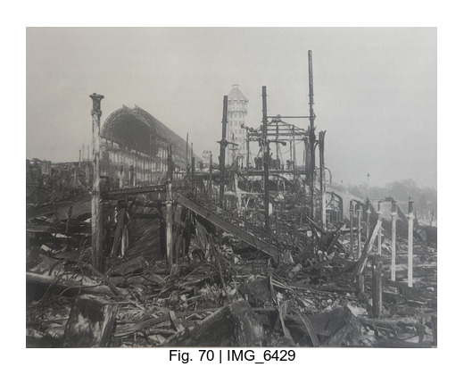
Photograph of collapsed ironwork, debris and surviving towers after the fire.
After the fire: the remains.
IMG_6429 · Figure 70
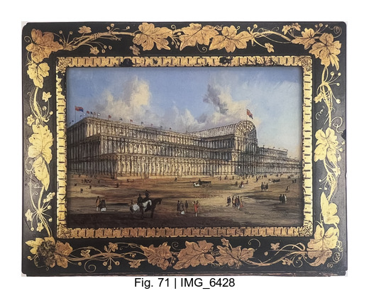
Decorative souvenir cover with a painted view of the Palace surrounded by gold vine ornament.
Crystal Palace memorabilia: blotting-book cover inset with painted glass over silver foil. Museum of London.
IMG_6428 · Figure 71
The decorative cover has rounded/irregular edges; a small amount of surrounding paper is retained.
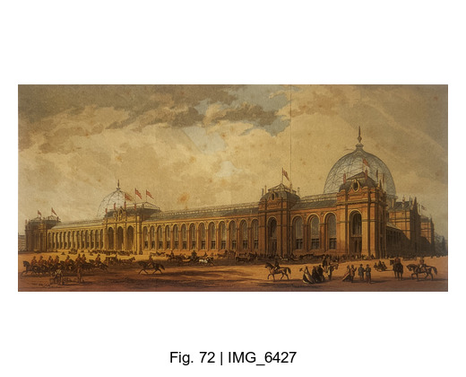
Coloured exterior view of the exhibition building and horse-drawn traffic.
The ‘Brompton Boilers’. South Kensington Exhibition, 1862. Illustrated London News (24 May 1862).
IMG_6427 · Figure 72
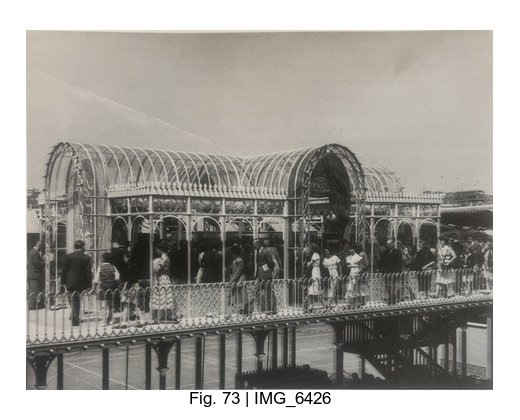
Photograph of visitors beside a model of the Crystal Palace at the Festival of Britain.
Scale model of the Crystal Palace, centenary pavilion, Festival of Britain 1951. Public Record Office.
IMG_6426 · Figure 73
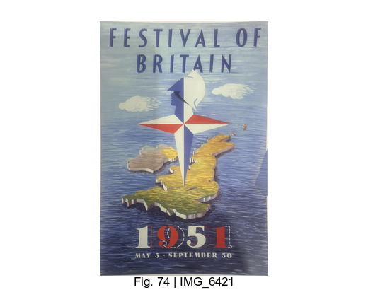
Poster showing the Festival emblem above a map of Britain; lettering announces 1951, May 3–September 30.
The official Festival poster. Museum of London.
IMG_6421 · Figure 74
The torn right edge removes a narrow area of blue sea/background. See repair notes and unrepaired comparison. The repaired sea texture is approximate and its join remains slightly visible at high magnification.
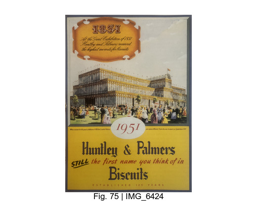
Biscuit advertisement celebrating the 1851 exhibition, with a Crystal Palace exterior and 1951 branding.
Remembering the Great Exhibition: advertisement for Huntley & Palmer Biscuits. Illustrated London News (12 May 1951).
IMG_6424 · Figure 75